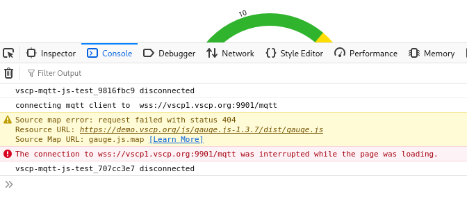
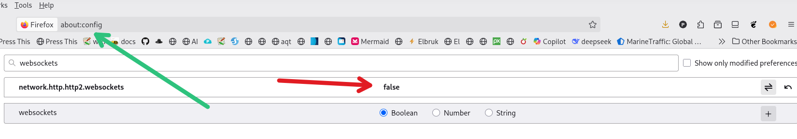

If you have problems on firefox getting the demo page to update, the cause is probably that Firefox use http2 for the connection to the websockets. You need to disable this setting to make the demo work. You can verify that this is the problem if you get the following error in the developer console of the browser:

Fix this in the configuration of Firefox.
Got to **about:config** and set `network.http.http2.enabled` to `false`.

Now the demo page should work as expected after reload. Read more about the problem here: https://support.mozilla.org/sv/questions/1324001